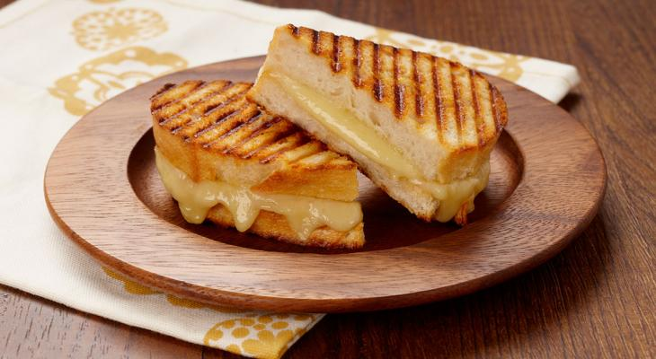

Grilled Cheese Sandwich

There's grilled cheese and there's GREAT grilled cheese. Learn how to make
the best Grilled Cheese sandwich with a crisp, buttery exterior and gooey cheese center.
Try this combination of cheeses and the process for buttering and cooking the
toast and you will be known for your Grilled Cheese Sandwiches. All you need
is a Creamy Tomato Soup to dunk your sandwich into.
Ingredients:
- Bread- a thicker sliced bread such as texas toast works best.
- Butter- use a generous 1/2 Tbsp of butter on each slice of bread. We use unsalted, but any butter will work here.
- Cheese- use a combination of sliced medium cheddar, gouda, and havarti cheese.
Directions:
- Butter the toast- spread 1/2 Tbsp butter on one side of each slice of bread.
- Heat skillet- place a skillet over low to medium/low heat. A griddle should be at 275˚F. Immediately add 2 slices of bread with the butter-side-down.
- Add cheese- stack cheeses on one of the pieces of bread, cover with the other piece of toast and flip the sandwich over.
- Brown the toast- Continue sauteeing, flipping once, until both sides are golden brown and cheese is melted.
- Serve- cut the sandwich in half on the diagonal to serve.